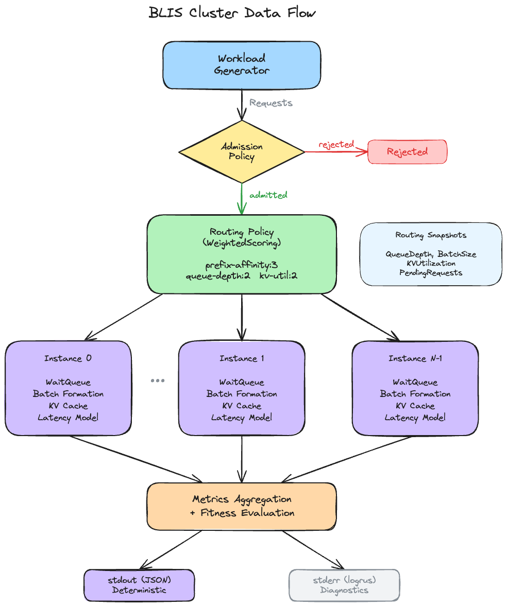
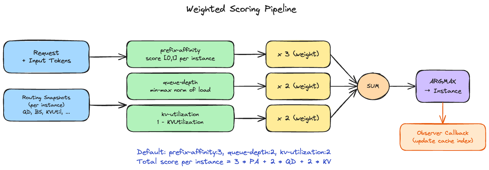

Cluster Architecture¶
This page describes how BLIS simulates multi-instance inference serving clusters. For single-instance simulation internals, see Core Engine.
Canonical sources: Signal freshness (INV-7) is defined in
docs/standards/invariants.md. If signal freshness descriptions here diverge,invariants.mdis authoritative.
Overview¶
A BLIS cluster consists of N independent inference instances orchestrated by a shared-clock event loop. Each incoming request passes through a three-stage pipeline — admission, routing, and per-instance processing — before metrics are aggregated across all instances.
┌─────────────┐
Requests ───────▶│ Admission │──rejected──▶ (counted)
└──────┬──────┘
│ admitted
┌──────▼──────┐
│ Routing │
└──────┬──────┘
│ target instance selected
┌────────────┼────────────┐
▼ ▼ ▼
┌──────────┐ ┌──────────┐ ┌──────────┐
│Instance 0│ │Instance 1│ │Instance 2│
└──────────┘ └──────────┘ └──────────┘
│ │ │
└────────────┼────────────┘
┌──────▼──────┐
│ Metrics │──▶ stdout (JSON)
│ Aggregation │
└─────────────┘

Shared-Clock Event Loop¶
The cluster simulator maintains a single global clock shared across all instances. At each iteration, it compares the earliest cluster-level event (request arrival, admission decision, routing decision) against the earliest per-instance event (step completion, queueing), and processes whichever is earlier.
Ordering rules: - Cluster events at time T are processed before instance events at time T (cluster-first priority) - When multiple instances have events at the same time, the instance with the lowest index goes first - Within a single instance, events are ordered by timestamp only
The simulation terminates when the clock exceeds the configured horizon or no events remain.
Admission Pipeline¶
Admission is the first gate in the online routing pipeline. Every incoming request is evaluated by the admission policy before being passed to routing.
Built-in Admission Policies¶
| Policy | Behavior |
|---|---|
always-admit |
Accept all requests (default) |
token-bucket |
Rate-limiting via a token bucket with configurable capacity and refill rate |
reject-all |
Reject all requests (for pathological testing) |
Token bucket rate-limits by consuming tokens proportional to input length: each request consumes tokens equal to its input token count, tokens refill at a constant rate, and requests are rejected when the bucket has insufficient tokens. Capacity and refill rate are configured via --token-bucket-capacity and --token-bucket-refill-rate.
Rejected requests are counted in the output metrics but do not enter the routing pipeline. To add a new admission policy, see Extension Recipes. See Configuration Reference for flag details.
Routing Pipeline¶
Routing selects which instance receives an admitted request. The routing policy sees a RouterState containing routing snapshots for all instances and the current simulation clock.
Simple Routing Policies¶
| Policy | Selection Rule |
|---|---|
round-robin |
Cyclic instance assignment |
least-loaded |
Instance with minimum effective load |
prefix-affinity |
Deterministic prefix hash mapping with least-loaded fallback |
always-busiest |
Instance with maximum load (for pathological testing) |
Effective load is defined as QueueDepth + BatchSize + PendingRequests, where PendingRequests counts requests that have been routed to an instance but not yet enqueued (the queueing event hasn't fired yet). This prevents routing pile-on at high arrival rates.
Weighted Scoring Policy¶
The weighted routing policy composes multiple scorers into a single routing decision. This is the recommended policy for production-like simulations and matches the architecture of real-world inference routers like llm-d's Endpoint Picker.
The routing decision follows this pipeline:
- Score: Each scorer produces a per-instance score in [0, 1]
- Clamp: Scores are clamped to [0, 1] (scorers should already produce values in this range)
- Weight: Each score is multiplied by its configured weight
- Sum: Weighted scores are summed across scorers for each instance
- Select: The instance with the highest total score is chosen (argmax)
Default weights: prefix-affinity:3, queue-depth:2, kv-utilization:2 (llm-d parity). Note: weights are normalized to sum to 1.0 before scoring, so only weight ratios matter — prefix-affinity:3,queue-depth:2 is identical to prefix-affinity:30,queue-depth:20. To add a new scorer, see Extension Recipes.

Scorer Composition¶
Scorers are the building blocks of the weighted routing policy. Each scorer evaluates one signal dimension across all instances.
Built-in Scorers¶
| Scorer | Signal | Score Computation | Notes |
|---|---|---|---|
prefix-affinity |
Prefix cache overlap | Proportion of request's block hashes found in instance's cache index | Stateful: updates cache index after routing via observer |
queue-depth |
Instance load | Min-max normalization of effective load (lower load = higher score) | Stateless |
kv-utilization |
Memory pressure | 1 - KVUtilization (lower utilization = higher score) |
Stateless |
load-balance |
Instance load | 1 / (1 + EffectiveLoad) (decreasing function of load) |
Stateless |
Stateful vs. Stateless Scorers¶
Most scorers are stateless — they compute scores purely from the current routing snapshot. The prefix-affinity scorer is stateful: after a routing decision, an observer callback updates the router-side prefix cache index with the routed request's block hashes. This enables the scorer to track which prefixes are cached at which instance without querying the actual per-instance KV caches.
Router-Side Prefix Cache Index¶
The prefix-affinity scorer maintains a lightweight approximate cache of per-instance block hash history. This is separate from the actual per-instance KV cache and serves as a routing-time estimate of cache hit probability.
Key properties: - Per-instance LRU with bounded capacity (default: 10,000 blocks) - Hierarchical block hashing: each block's hash chains with the prior block's hash for semantic prefix matching - Updated synchronously after each routing decision (Tier 1 freshness) - Score = proportion of request's block hashes found in the instance's cache index
Signal Freshness¶
Routing decisions depend on instance state signals with different freshness guarantees. Understanding freshness tiers is important for interpreting simulation results under high load.
Freshness Tiers¶
| Tier | Signals | Update Mechanism | Staleness |
|---|---|---|---|
| Tier 1 (synchronous, always fresh) | PendingRequests, prefix cache index | Updated immediately after routing decision | None |
| Tier 2 (synchronous, point-in-time) | QueueDepth, BatchSize | Read from current instance state during routing | Current within the tick |
| Tier 3 (periodic, stale) | KVUtilization, FreeKVBlocks, CacheHitRate | Refreshed after configurable SnapshotRefreshInterval |
Potentially stale across multiple steps |
The --snapshot-refresh-interval flag controls how frequently Tier 3 signals are re-read from instances. Setting it to 0 (default) makes all signals synchronous. Non-zero values introduce realistic staleness that affects routing quality under load.
Counterfactual Regret¶
When decision tracing is enabled (--trace-level decisions), BLIS computes counterfactual regret for each routing decision. This measures how much better an alternative routing choice could have been.
Computation:
1. Score all candidate instances using the routing policy's scoring function
2. Rank candidates by score (descending)
3. Compute regret = best_score - chosen_score (clamped to >= 0)
4. Record the top-k candidates with their scores and instance state
Interpretation:
- For the weighted policy, regret is typically zero because the chosen instance IS the highest-scored candidate
- For round-robin, regret is non-zero because the policy ignores load signals
- Higher regret does not necessarily imply worse performance — round-robin can achieve lower tail latency than least-loaded through perfect distribution uniformity
Configure counterfactual analysis via --counterfactual-k (number of candidates to record per decision).
Metrics Aggregation¶
After simulation completes, per-instance metrics are aggregated into a unified cluster result:
| Metric Category | Aggregation |
|---|---|
| TTFT, E2E | Combined across all instances. JSON output: mean, p90, p95, p99. Internal Distribution: also p50, min, max (used by fitness evaluation). ITL: mean, p90, p95, p99 in JSON output. |
| Throughput | Total output tokens / simulation time; total requests / simulation time |
| Request counts | Sum of completed, queued, running, preempted, dropped across instances |
| Per-SLO-class | Separate distributions per SLO class (for multi-tenant analysis) |
| Fairness | Jain Fairness Index across tenant throughputs |
Fitness Evaluation¶
When --fitness-weights are configured, BLIS computes a single fitness score from the aggregated metrics. This enables automated policy comparison:
- Latency metrics (TTFT, E2E) are normalized via
1/(1 + value/1000)wherevalueis in ticks (microseconds) and 1000 ticks = 1ms is the reference point (lower latency = higher score). For example, TTFT of 50,000 ticks (50ms) maps to1/(1+50) = 0.0196. - Throughput metrics are normalized via
value/(value + reference)wherereferenceRPS = 100.0andreferenceTPS = 10000.0(higher throughput = higher score) - Normalized scores are multiplied by their configured weights and summed
- Higher fitness = better performance
Note: the normalization compresses raw metric differences significantly. A 38% TTFT improvement might map to only an 8% fitness score difference. Always examine raw metrics alongside fitness scores.
Instance Isolation¶
Each instance in the cluster is a fully independent single-instance simulator with its own: - Event queue and simulation state - Wait queue and running batch - KV cache (block allocation, prefix caching, LRU eviction) - Latency model - Scheduling and priority policies
Instances share the global clock but have no direct communication. All inter-instance coordination happens through the routing layer (via routing snapshots). This matches the architecture of real inference serving clusters where instances are independent processes.
Online Routing Pipeline Walkthrough¶
A complete request lifecycle through the cluster pipeline:
- Generation: The workload generator creates a request with arrival time, input tokens, and output tokens
- ClusterArrivalEvent: Scheduled at the request's arrival time
- AdmissionDecisionEvent: Admission policy evaluates the request
- If rejected: request counted, pipeline ends
- If admitted: proceed to routing (with optional
--admission-latencydelay) - RoutingDecisionEvent: Routing policy selects target instance
- PendingRequests for target instance incremented
- Request injected into target instance's wait queue (with optional
--routing-latencydelay) - QueuedEvent: Fired by target instance when request enters its queue
- PendingRequests decremented (request is now fully absorbed)
- If no StepEvent exists, one is scheduled (work-conserving)
- Per-instance processing: Request follows the single-instance lifecycle (see Core Engine)
- Completion: Request metrics (TTFT, E2E, ITL) recorded at instance level, aggregated at cluster level